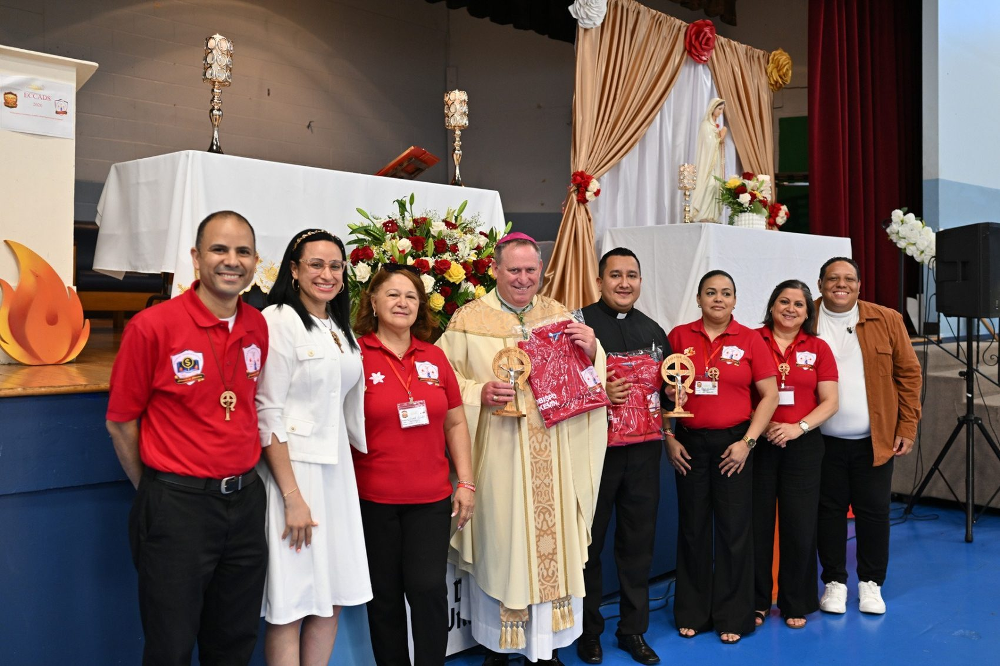

Diócesis de Paterson, Nueva Jersey
Diócesis de Paterson, Nueva Jersey
Renovación Carismática
Católica
El centro de información de nuestra comunidad diocesana
“Ven Espíritu Santo, enciende tu fuego”
↓ Desliza para conocernos
Diócesis de Paterson, Nueva Jersey
El centro de información de nuestra comunidad diocesana
“Ven Espíritu Santo, enciende tu fuego”
La Renovación Carismática Católica de la Diócesis de Paterson reúne a los grupos de oración de toda la diócesis bajo un mismo Comité Diocesano, con un escudo que resume nuestra identidad: la paloma del Espíritu Santo, los siete dones, y María, Nuestra Señora de Pentecostés.
Vivimos y servimos dentro de la Iglesia Católica, en comunión con nuestros pastores y con la Diócesis de Paterson, y en comunión con la Renovación Carismática Católica a nivel nacional (Estados Unidos y Canadá) — presentes en la vida parroquial a través de nuestros ministerios, escuelas de formación y encuentros diocesanos.

En comunión con la Renovación Carismática Católica de los Estados Unidos y Canadá.
Ser una Renovación Carismática Católica viva, evangelizadora y en comunión en la Diócesis de Paterson, que forme discípulos misioneros, llenos del Espíritu Santo, comprometidos con la santidad, el servicio y la formación integral.
Promover la experiencia del Bautismo en el Espíritu Santo, renovar la vida de fe en las comunidades hispanas de la Diócesis de Paterson, y fortalecer nuestros ministerios y grupos de oración como espacios de encuentro con Dios, formación y misión evangelizadora.
Fuente de toda acción pastoral.
Quien guía, corrige y renueva.
En unidad con los pastores y la Iglesia.
Expresión viva del amor en acción.
Para madurar en los dones y en la fe.
Inspirados en el Plan Pastoral Nacional 2026–2028 del Comité Nacional de Servicio Hispano (RCC Hispana), aplicado a nuestra realidad como Renovación Carismática Católica de la Diócesis de Paterson.
La experiencia del Bautismo en el Espíritu Santo.
Desde una auténtica Cultura de Pentecostés.
A la Iglesia y a las comunidades de la Renovación Carismática Católica de la Diócesis de Paterson.
Los servidores que coordinan la vida de la Renovación Carismática Católica de la Diócesis de Paterson.
Director / Director Espiritual
St. Therese de Lisieux, Paterson
Coordinadora General Diocesana
St. Paul, Clifton
Sub-Coordinadora Diocesana
Our Lady of Lourdes, Paterson
Secretaria Diocesana
St. Stephen, Paterson
Tesorero
St. John the Baptist, Paterson
Directora Escuela de Formación de Líderes (EFL)
St. Therese de Lisieux, Paterson
Director de Ministerios de Música y Comunicación/Publicidad
St. Anthony of Padua, Passaic
Coordinadora Ministerio de Intercesión
Cada ministerio de la RCC Paterson tiene un llamado específico dentro del cuerpo de Cristo. Conoce su identidad y propósito.
Los grupos de oración que conforman la Renovación Carismática Católica de la Diócesis de Paterson, organizados por parroquia.
El horario de 7:00 pm – 9:30 pm es provisional para todos los grupos mientras se confirma el horario real de cada uno con el Comité Diocesano. Si coordinas un grupo y tu información no aparece o necesita corrección, contáctanos.
Los próximos encuentros abiertos a toda la comunidad de la Renovación Carismática Católica de la Diócesis de Paterson.
Predicación: Diácono José Luis Abreu · Música: Marvin Núñez
Predicación: Osvaldo Fernández, P. Starli Castaños (sáb.) y P. Yasid Salas (dom.)
Predicación: María Batista
Esta agenda se sincroniza con el calendario público oficial de la RCC Paterson. Horarios y sedes sujetos a confirmación final por el Comité Diocesano.
I Encuentro Carismático Católico Anual Diocesano de Servidores — nuestro primer gran encuentro anual de servidores.

Programa completo, invitados especiales, galería de fotos y video resumen del primer encuentro.
Ver evento completo →